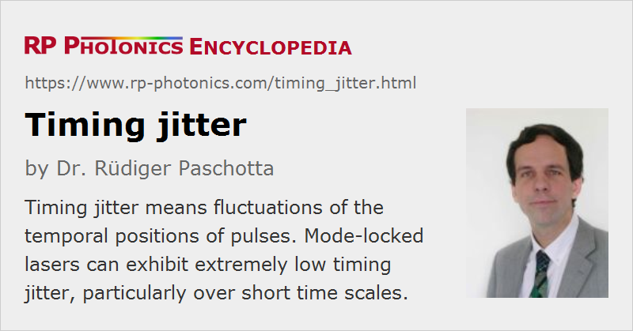

Timing Jitter
Definition: fluctuations of the temporal positions of pulses
Alternative term: timing noise
More specific terms: Gordon–Haus jitter, pulse-to-pulse jitter
German: zeitliche Fluktuationen
Categories: fluctuations and noise, optical metrology
How to cite the article; suggest additional literature
Author: Dr. Rüdiger Paschotta
Pulse trains, generated e.g. in mode-locked lasers, exhibit some deviations of the temporal pulse positions from those in a perfectly periodic pulse train. This phenomenon is called timing jitter and is important for many applications, e.g. for long-range optical fiber communications or for optical sampling measurements. Similarly, pulses from Q-switched lasers exhibit timing jitter, although the involved physical mechanisms are very different. Another type of timing jitter occurs in photodetectors, as also discussed below.
Timing Jitter of Mode-locked Lasers
The timing errors considered can be of different kinds:
- the deviations between the temporal pulse positions and those of perfectly regular clock ticks
- the deviations between the temporal pulse positions and those of the ticks of a real (noisy) oscillator (e.g. the electronic oscillator which drives the modulator of an actively mode-locked laser)
- the deviations of the pulse-to-pulse spacing from the average pulse period (pulse-to-pulse jitter or cycle jitter)
In telecom systems, the relevant jitter can be that between data-carrying pulses and a clock signal. The latter may have been extracted from the data stream itself, or transmitted separately. In the former case, the low-frequency jitter is transferred to the extracted clock signal, and often is not relevant for detection.
Timing errors may be quantified (→ noise specifications) in different ways:
- with an r.m.s. (root-mean-square) value for a certain measurement bandwidth
- as a power spectral density, either of the timing deviation or of the timing phase
Timing jitter is related to phase noise in the optical frequency components of the pulse train. In the absence of technical noise, the jitter of a mode-locked laser is limited by quantum noise, but in most cases it is dominated by vibrations and drifts of the laser resonator. Important theoretical results, based on analytical and numerical modeling, are discussed in Refs. [5, 12, 13, 15].
The timing jitter of various kinds of mode-locked lasers (e.g. miniature bulk lasers, fiber lasers, or external-cavity diode lasers) can be very small (see Figure 1) – in some cases significantly smaller than that of high-quality electronic oscillators. This applies particularly to short time scales, where a laser can be used as a very precise timing reference (as a kind of flywheel). The long-term timing drifts can also be suppressed to extremely small levels using self-referenced frequency combs.
Measurement of Timing Jitter
There are a variety of different methods for measuring the timing jitter of mode-locked lasers:
- The popular von der Linde method [2] is based on the evaluation of RF spectra of photodiode signals. It is fairly simple, but rests on assumptions (small fluctuation amplitudes, no correlations between intensity and phase fluctuations, etc.) which are not always well satisfied, and is subjected to various technical limitations. In particular, phase noise of the local oscillator of the electronic spectrum analyzer can affect the results [14].
- The phase detector method (see e.g. [3]) is often applied to actively mode-locked lasers, where the laser timing is compared with that of the electronic driver signal (residual jitter). It is not easy to achieve good suppression of the influence of intensity noise, particularly due to the phenomenon of drifting mixer offsets. Refined methods are available to measure relative timing jitter between different lasers, which must, however, be synchronized.
- The relative timing jitter of free-running passively mode-locked lasers (but also of synchronized lasers) can be measured with a versatile method based on a beat note of photodiode signals, generated with appropriate RF techniques and numerical processing [14]. This method is very versatile, extremely sensitive, and relatively immune to a range of problems as frequently encountered with other methods. It is not affected by electronic oscillator noise and mixer offsets, and only very weakly by intensity noise. By comparison of different lasers, the absolute timing jitter can be obtained. For example, if one laser is known to have a lower jitter, the measured relative jitter is close to the absolute jitter of the other laser. If both lasers are very similar but uncorrelated, the recorded power spectral density at each noise frequency is twice that of a single laser.
- Very precise measurements are possible with a balanced optical cross-correlator based on a χ(2) nonlinear crystal [18]. One may, e.g., compare the timing of two mode-locked lasers. The r.m.s. noise floor in a 10-MHz bandwidth, for example, can be well below 1 fs. Note that this method allows one to measure timing deviations only if the pulses have a quite low distance, e.g. up to 100 fs. Therefore, it is usually applied only to timing-stabilized lasers, exhibiting bounded timing fluctuations.
Timing Jitter of Q-switched and Gain-switched Lasers
In an actively Q-switched laser, there is some time delay between the opening of the Q switch and the generated pulse. The magnitude of this time delay is subject to fluctuations, so that a timing jitter results even if the modulator signal is very regular. The origin of that jitter may be fluctuations of the pump power, but thermal effects, vibrations and other disturbances can also contribute. A variation of the pulse timing by more than the pulse duration (Figure 2) is not unusual in such lasers. The jitter can be reduced e.g. with injection seeding.
In passively Q-switched lasers, fluctuations of pump power may lead to a larger timing jitter, as a pulse is emitted as soon as the laser gain becomes high enough to overcome the losses. On the other hand, noise of the pulse energy is reduced.
If pulses from an actively Q-switched laser are used in a timing-critical setup, it can be a good approach to trigger that setup with a photodiode signal indicating the pulse arrival times, rather than with the modulator signal.
Gain-switched lasers also exhibit relatively large timing jitter, compared with mode-locked lasers.
Timing Jitter of Photodetectors
When a photodetector such as a photodiode is used for measuring pulse arrival times, the photocurrent also exhibits some timing jitter, and the timing error in the measured result may be further increased by noise in the detector electronics.
Details such as r.m.s. jitter and the shape of the probability distribution depend very much on the type of detector. For example, avalanche photodiodes in Geiger mode, used as SPADs (single-photon avalanche detectors), have other noise characteristics than ordinary photodiodes used at higher optical signal levels. The r.m.s. jitter of a fast SPAD can be below 100 ps for single-photon detection. Averaging over multiple pulses can be used to further reduce the effective jitter.
In the detection of pulse trains for mode-locked lasers, saturation effects are often a limiting factor: the peak power must be limited in order to avoid saturation, and this results in a low average power and thus a poor signal-to-noise ratio. A possible solution is to use a source with a high pulse repetition rate, or to increase the repetition rate of an existing source by repetition rate multiplication using interferometers [24].
Shot noise is a limiting factor the precision with which the pulse position (defined as a “center of gravity”) can be determined. For a given pulse energy, the shot noise impact is higher for longer pulses [13]. Curiously, however, the shot noise limit for photo-detected pulses in a coherent pulse train is not determined by the photodetector's temporal resolution: due to correlations in the photocurrent spectrum, the noise limit can be lower for shorter optical pulses, even if this does not result in shorter detected pulses [28].
Suppliers
The RP Photonics Buyer's Guide contains 2 suppliers for timing jitter measurement devices. Among them:
Questions and Comments from Users
Here you can submit questions and comments. As far as they get accepted by the author, they will appear above this paragraph together with the author’s answer. The author will decide on acceptance based on certain criteria. Essentially, the issue must be of sufficiently broad interest.
Please do not enter personal data here; we would otherwise delete it soon. (See also our privacy declaration.) If you wish to receive personal feedback or consultancy from the author, please contact him e.g. via e-mail.
By submitting the information, you give your consent to the potential publication of your inputs on our website according to our rules. (If you later retract your consent, we will delete those inputs.) As your inputs are first reviewed by the author, they may be published with some delay.
Bibliography
| [1] | J. P. Gordon and H. A. Haus, “Random walk of coherently amplified solitons in optical fiber transmission”, Opt. Lett. 11 (10), 665 (1986), doi:10.1364/OL.11.000665 |
| [2] | D. von der Linde, “Characterization of the noise in continuously operating mode-locked lasers”, Appl. Phys. B 39, 201 (1986), doi:10.1007/BF00697487 |
| [3] | M. J. W. Rodwell et al., “Subpicosecond laser timing stabilization”, IEEE J. Quantum Electron. 25 (4), 817 (1989), doi:10.1109/3.17346 |
| [4] | D. J. Derickson et al., “Residual and absolute timing jitter in actively mode-locked semiconductor lasers”, Electron. Lett. 26 (24), 2026 (1990), doi:10.1049/el:19901308 |
| [5] | H. A. Haus and A. Mecozzi, “Noise of mode-locked lasers”, IEEE J. Quantum Electron. 29 (3), 983 (1993), doi:10.1109/3.206583 |
| [6] | L. A. Jiang et al., “Quantum-limited noise performance of a mode-locked laser diode”, Opt. Lett. 27 (1), 49 (2002), doi:10.1364/OL.27.000049 |
| [7] | M. C. Gross et al., “Spectral method for the simultaneous determination of uncorrelated and correlated amplitude and timing jitter”, Appl. Phys. Lett. 80 (20), 3694 (2002), doi:10.1063/1.1480105 |
| [8] | R. K. Shelton et al., “Subfemtosecond timing jitter between two independent, actively synchronized, mode-locked lasers”, Opt. Lett. 27 (5), 312 (2002), doi:10.1364/OL.27.000312 |
| [9] | M. E. Grein et al., “Observation of quantum-limited timing jitter in an active, harmonically mode-locked fiber laser”, Opt. Lett. 27 (11), 957 (2002), doi:10.1364/OL.27.000957 |
| [10] | F. W. Helbing et al., “Carrier–envelope offset phase-locking with attosecond timing jitter”, J. Sel. Top. Quantum Electron. 9 (4), 1030 (2003), doi:10.1109/JSTQE.2003.819104 |
| [11] | T. R. Schibli et al., “Attosecond active synchronization of passively mode-locked lasers by balanced cross correlation”, Opt. Lett. 28 (11), 947 (2003), doi:10.1364/OL.28.000947 |
| [12] | R. Paschotta, “Noise of mode-locked lasers. Part I: numerical model”, Appl. Phys. B 79, 153 (2004), doi:10.1007/s00340-004-1547-x |
| [13] | R. Paschotta, “Noise of mode-locked lasers. Part II: timing jitter and other fluctuations”, Appl. Phys. B 79, 163 (2004), doi:10.1007/s00340-004-1548-9 |
| [14] | R. Paschotta et al., “Relative timing jitter measurements with an indirect phase comparison method”, Appl. Phys. B 80 (2), 185 (2005), doi:10.1007/s00340-004-1704-2 |
| [15] | R. Paschotta et al., “Optical phase noise and carrier–envelope offset noise of mode-locked lasers”, Appl. Phys. B 82 (2), 265 (2006), doi:10.1007/s00340-005-2041-9 |
| [16] | F. Quinlan et al., “Ultralow-jitter and -amplitude-noise semiconductor-based actively mode-locked laser”, Opt. Lett. 31 (19), 2870 (2006), doi:10.1364/OL.31.002870 |
| [17] | S. Gee et al., “Self-stabilization of an actively mode-locked semiconductor-based fiber-ring laser for ultralow jitter”, IEEE Photon. Technol. Lett. 19 (7), 498 (2007), doi:10.1109/LPT.2007.892902 |
| [18] | J. Kim et al., “Attosecond-resolution timing jitter characterization of free-running mode-locked lasers”, Opt. Lett. 32 (24), 3519 (2007), doi:10.1364/OL.32.003519 |
| [19] | O. Prochnow et al., “Quantum-limited noise performance of a femtosecond all-fiber ytterbium laser”, Opt. Express 17 (18), 15525 (2009), doi:10.1364/OE.17.015525 |
| [20] | R. Paschotta, “Timing jitter and phase noise of mode-locked fiber lasers”, Opt. Express 18 (5), 5041 (2010), doi:10.1364/OE.18.005041 |
| [21] | J. Kim and F. X. Kärtner, “Attosecond-precision ultrafast photonics”, Laser & Photon. Rev. 4 (3), 432 (2010), doi:10.1002/lpor.200910003 |
| [22] | J. A. Cox et al., “Complete characterization of quantum-limited timing jitter in passively mode-locked fiber lasers”, Opt. Lett. 35 (20), 3522 (2010), doi:10.1364/OL.35.003522 |
| [23] | Y. Song et al., “Impact of pulse dynamics on timing jitter in mode-locked fiber lasers”, Opt. Lett. 36 (10), 1761 (2011), doi:10.1364/OL.36.001761 |
| [24] | A. Haboucha et al., “Optical-fiber pulse rate multiplier for ultralow phase-noise signal generation”, Opt. Lett. 36 (18), 3654 (2011), doi:10.1364/OL.36.003654 |
| [25] | T. K. Kim et al., “Sub-100-as timing jitter optical pulse trains from mode-locked Er-fiber lasers”, Opt. Lett. 36 (22), 4443 (2011), doi:10.1364/OL.36.004443 |
| [26] | D. Li et al., “Attosecond timing jitter pulse trains from semiconductor saturable absorber mode-locked Cr:LiSAF lasers”, Opt. Express 20 (21), 23422 (2012), doi:10.1364/OE.20.023422 |
| [27] | A. J. Benedick et al., “Optical flywheels with attosecond jitter”, Nature Photon. 6 (2), 97 (2012), doi:10.1038/nphoton.2011.326 |
| [28] | F. Quinlan et al., “Exploiting shot noise correlations in the photodetection of ultrashort optical pulse trains”, Nature Photon. 7, 290 (2013), doi:10.1038/nphoton.2013.33 |
| [29] | X. Xie et al., “Photonic microwave signals with zeptosecond-level absolute timing noise”, Nature Photon. 11, 44 (2017), doi:10.1038/nphoton.2016.215 |
| [30] | R. Paschotta, H. R. Telle, and U. Keller, “Noise of Solid State Lasers”, in Solid-State Lasers and Applications (ed. A. Sennaroglu), CRC Press, Boca Raton, FL (2007), Chapter 12, pp. 473–510 |
See also: noise specifications, timing phase, laser noise, phase noise, mode-locked lasers, frequency combs, Gordon–Haus jitter, synchronization of lasers
and other articles in the categories fluctuations and noise, optical metrology
|  |
If you like this page, please share the link with your friends and colleagues, e.g. via social media: 


These sharing buttons are implemented in a privacy-friendly way! |
2020-05-25
What is considered to be a low value of timing jitter? Any value lower than the pulse-to-pulse separation? Or any value lower than the temporal pulse width?
In an optical sampling experiment, what would be considered a small enough value of jitter so that the effect is negligible?
Answer from the author:
It depends very much on the application what value of timing jitter is considered as low. In your example of optical sampling, one would usually require that the r.m.s. timing deviation is well below the pulse duration.
Note that timing jitter cannot always be specified in units of seconds – in particular, if there are unbounded timing drifts.